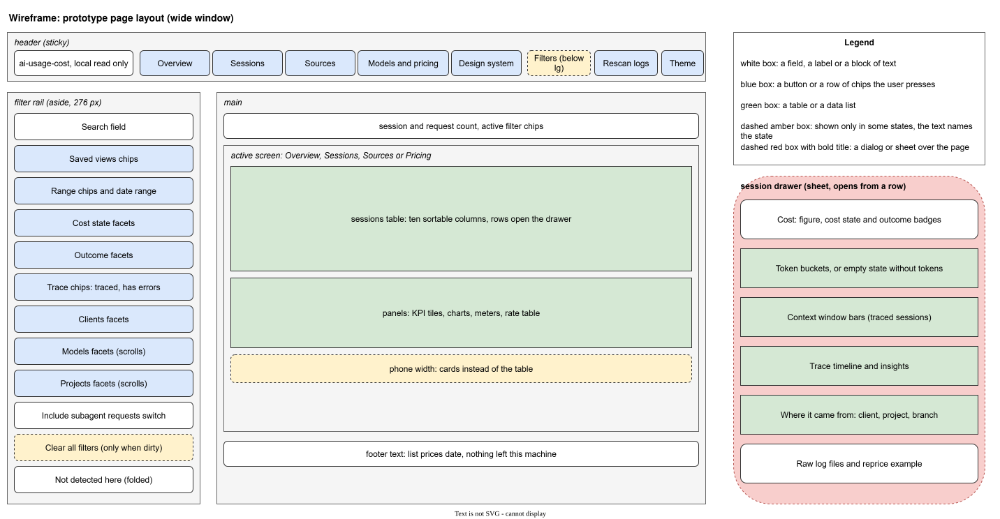

active approved inferred covers web/src/prototype/**
Web prototype page wireframe
This wireframe shows the layout of the prototype page on a wide window: the header, the filter column, the main area and the drawer that slides in. It lets a designer check proportions and placement without opening the app. Parts that appear only in some states are drawn dashed.
What the diagram shows
The header is sticky and holds the product name, five tab buttons, a Filters button, a rescan button and a theme button web/src/prototype/Prototype.tsx:34-96. The Filters button is hidden on wide windows and absent on the gallery web/src/prototype/Prototype.tsx:70-79.
The filter rail is a fixed column of 276 pixels on wide windows web/src/prototype/Rail.tsx:260-262. It holds a search field, chip rows, facet groups, a switch, a clear button and a folded list of unused readers web/src/prototype/Rail.tsx:93-240. The clear button appears only when a filter is set web/src/prototype/Rail.tsx:214-218.
The main area starts with a count line and the active filter chips, then the active screen, then a footer text web/src/prototype/Screens.tsx:352-373. The sessions table has ten sortable columns web/src/prototype/SessionsScreen.tsx:148-240. On a phone width cards replace the table web/src/prototype/SessionsScreen.tsx:127-147.
The session drawer is a sheet over the page with cost, token buckets, context window, trace, provenance and log files web/src/prototype/Screens.tsx:84-264.
Capability and related functionality
The capability is the page frame that every screen sits in. The detailed screens are in the screen maps, for example Sessions Screen Screen Map, and the component structure is in Web prototype component tree.
Web prototype page wireframe

Node citations
- header:
web/src/prototype/Prototype.tsx:34-96 - logo:
web/src/prototype/Prototype.tsx:35-45 - tab0:
web/src/prototype/Prototype.tsx:49-67 - tab1:
web/src/prototype/Prototype.tsx:49-67 - tab2:
web/src/prototype/Prototype.tsx:49-67 - tab3:
web/src/prototype/Prototype.tsx:49-67 - tab4:
web/src/prototype/Prototype.tsx:49-67 - filters:
web/src/prototype/Prototype.tsx:70-79 - rescan:
web/src/prototype/Prototype.tsx:83-86 - theme:
web/src/prototype/Prototype.tsx:87-94 - rail:
web/src/prototype/Rail.tsx:260-262 - search:
web/src/prototype/Rail.tsx:93-97 - saved:
web/src/prototype/Rail.tsx:99-106 - range:
web/src/prototype/Rail.tsx:108-121 - coststate:
web/src/prototype/Rail.tsx:125-135 - outcome:
web/src/prototype/Rail.tsx:137-147 - trace:
web/src/prototype/Rail.tsx:149-163 - clients:
web/src/prototype/Rail.tsx:165-175 - models:
web/src/prototype/Rail.tsx:177-188 - projects:
web/src/prototype/Rail.tsx:190-201 - switch:
web/src/prototype/Rail.tsx:203-212 - clear:
web/src/prototype/Rail.tsx:214-218 - undetected:
web/src/prototype/Rail.tsx:220-240 - main:
web/src/prototype/Screens.tsx:352-373 - counts:
web/src/prototype/Screens.tsx:353-358 - screen:
web/src/prototype/Screens.tsx:360-368 - table:
web/src/prototype/SessionsScreen.tsx:148-240 - panels:
web/src/prototype/OverviewScreen.tsx:370-386 - phone:
web/src/prototype/SessionsScreen.tsx:127-147 - footer:
web/src/prototype/Screens.tsx:370-372 - drawer:
web/src/prototype/Screens.tsx:84-264 - d-cost:
web/src/prototype/Screens.tsx:110-123 - d-buckets:
web/src/prototype/Screens.tsx:125-169 - d-context:
web/src/prototype/Screens.tsx:171-192 - d-trace:
web/src/prototype/Screens.tsx:194-210 - d-meta:
web/src/prototype/Screens.tsx:226-247 - d-files:
web/src/prototype/Screens.tsx:249-257
Code references
| Code | What it shows |
|---|---|
web/src/prototype/Prototype.tsx:34-96 |
Header |
web/src/prototype/Rail.tsx:245-276 |
Filter rail |
web/src/prototype/Screens.tsx:342-377 |
Main area and drawer |
web/src/prototype/SessionsScreen.tsx:127-240 |
Cards and table |